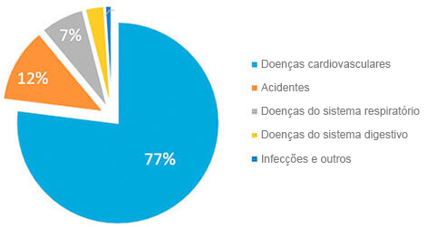
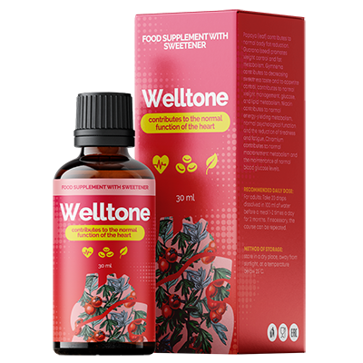

Estatística: um a cada três cidadãos com mais de 35 anos morre por conta de doenças causadas pela hipertensão arterial!
João dos Santos «Eu pessoalmente 2020 enviarei aos primeiros leitores o remédio para hipertensão com o desconto de 50%»

Cardiocirurgião famoso, organizador do programa médico, professor .
As doenças cardiovasculares são as líderes mundiais em número de mortes. 94% dos infartos e AVC acontecem precisamente por conta da hipertensão arterial. Em 89% dos casos, infartos e AVC com a hipertensão resultam em morte. Falando sobre dados específicos, a hipertensão é responsável por aproximadamente 77-78% dos casos de mortes «naturais». Em números é equivalente a cerca de 1,54 milhões de mortes em 2016.
“Causas de morte em 2017”
O mais terrível é que a maioria das pessoas nem sequer suspeita de ter hipertensão. De acordo com as estatísticas, 67% de pessoas com a hipertensão nem sabem que estão doentes. É que os saltos de pressão não são levados a sério, até acontecer uma crise hipertensiva, quando a pressão está muito elevada. Poucas pessoas prestam atenção a dores de cabeça, tonturas, fraqueza, inchaço do rosto, palpitações, visão turva, nervosismo. E, enquanto isso, todos esses sintomas já incidam a hipertensão arterial crónica. E também, que é preciso agir com urgência, antes que seja demasiadamente tarde!
Hoje existe o único remédio para a hipertensão que afeta a causa da doença e, se for utilizado apropriadamente, elimina a hipertensão arterial completamente. É um produto «» alemão. O fato é que o remédio restaura completamente o tônus vascular devido a uma fórmula científica única. Além disso, o remédio reduz o nível de colesterol e normaliza o ciclo cardíaco. É muito importante que não seja apenas eficaz, mas também seguro para a saúde, já que contém exclusivamente componentes naturais. Sendo assim, «» pode ser tomado em qualquer idade, ele não possui efeitos colaterais e não causa complicações em outros órgãos. A eficácia e a segurança do remédio foram comprovadas por inúmeros testes clínicos envolvendo mais de 5.000 participantes.
Antigamente, estava em acesso em um número limitado de países, apesar de que fosse eu que pessoalmente combinava com os produtores. Contudo, finalmente hoje em dia ,«» pode ser comprado no nosso país, também.
Foi tomada a decisão sobre o levantamento do embargo sobre as importações dos remédios contra a hipertensão arterial.

— Bom dia, senhora Pereira. A senhora poderia explicar por que foi tomada esta decisão?
— A nossa principal tarefa é assegurar a saúde da população por todo o mundo. E se há um problema em algum lugar, devemos resolvê-lo. Infelizmente, o nosso país revela estatísticas decepcionantes: mais de 70% dos residentes sofrem de hipertensão arterial e quase um terço morre por conta de doenças cardiovasculares. Este número está acima da média nos outros países da Europa.
— Esses números assustadores são reais! A senhora poderia explicar como o resto de países europeus lutam contra a hipertensão arterial?
— Atualmente, todas as clínicas e centros de reabilitação europeias recebem o remédio inovador , desenvolvido por cientistas alemães. A peculiaridade de é que este remédio não tem contraindicações e cura os vasos no nível celular. Ele normaliza rapidamente a pressão e impede o desenvolvimento de doenças cardiovasculares.

— Senhora Pereira, é verdade que em Portugal também se pode comprar este remédio?
— Sim, é o que quero dizer quando falo sobre o levantamento temporário do embargo sobre importações de drogas europeias contra a hipertensão arterial. Esta decisão foi tomada pelas nossas autoridades. Quando falamos sobre a saúde da população, não se pode se tratar de desentendimentos políticos.
— Como afeta o corpo?
— De acordo com os resultados do estudo da Organização Mundial da Saúde, o remédio possui as seguintes características:
- • ajusta o tônus de vasos sanguíneos;
- • diminui o nível de colesterol;
- • normaliza o ciclo cardíaco.
No momento, eis a estatística:
- – na prevenção de doenças cardiovasculares em pessoas maiores de 35 anos com a ajuda do , foi revelada a normalização da pressão arterial em 97% dos entrevistados;
- – com a prescrição de durante i,a recuperação após emergências hipertensivas, observaram-se mudanças positivas no fluxo sanguíneo cerebral em 86% das pessoas.
— Senhora Pereira, muito obrigada pela entrevista!! Esta é, de fato, uma ótima notícia para todos os portugueses. Esperemos que agora possamos lidar com a hipertensão e elevar a expectativa de vida média de nós.
Comentários